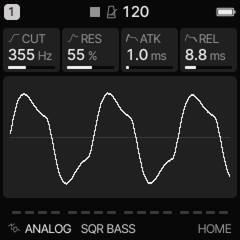
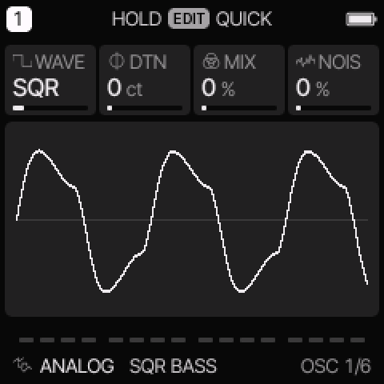
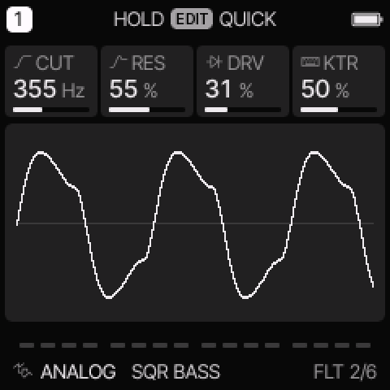

ANALOG engine
All engines · Modes and shared controls
Use ANALOG for basses, leads, pads, and sounds shaped by a resonant filter.
How the sound is made
Two oscillators and a noise source feed a filter. The envelope sets the note shape. Filter and shape modulation can change the tone while a note plays.

ANALOG on HOME. These knobs apply to the selected track unless HOME LEVELS is enabled.
HOME knobs
| Knob 1 |
Knob 2 |
Knob 3 |
Knob 4 |
| CUT |
RES |
ATK |
REL |
For HOME LEVELS, see HOME and mixer.
Engine controls
Press the panel EDIT button to cycle the engine pages.
Pause between presses to avoid opening its shortcut layer.
The musical EDIT key is a different control.
OSC page

OSC is engine page 1.
| Control |
What it changes |
| WAVE |
Select SAW, SQR, TRI, SIN, PWM, SYNC, or SUB. See the mode table below. |
| DTN / SYNC |
Detune the second oscillator in cents. In SYNC, change its pitch above the first oscillator instead. |
| MIX / SUB |
Mix the two oscillators. In SUB, increase the lower square oscillator. |
| NOIS |
Add noise before the filter. |
FLT page

FLT is engine page 2.
| Control |
What it changes |
| CUT |
Set the filter cutoff. A higher LP cutoff usually gives a brighter sound. |
| RES |
Emphasize frequencies near the cutoff. |
| DRV |
Add drive before the filter. |
| KTR |
Make the cutoff follow the played pitch. Higher notes open the filter more. |
Oscillator and filter modes
| WAVE |
Use |
| SAW |
Bright oscillator pair for basses, strings, and brass. |
| SQR |
Square oscillator pair with a hollow tone. |
| TRI |
Softer triangle oscillator pair. |
| SIN |
Sine oscillator pair with few upper harmonics. |
| PWM |
Pulse oscillator pair. Route LFO or ENV to SHP to move the pulse width. |
| SYNC |
The first saw resets the second saw. Sweep SYNC or route modulation to SHP. |
| SUB |
A saw with a square one octave below. SUB controls the lower oscillator level. |
On EDIT > FILTER, TYPE selects LP, BP, or HP.
LP removes high frequencies. BP keeps a band near the cutoff. HP removes low frequencies.
Try these changes
Hear a filter sweep
Load 303 SQUELCH. Hold one note and turn CUT slowly. Increase RES, then lower it again. On ENV DEST, add a positive FLT amount to make each attack open the filter.
Hear hard sync
Load JUPITER SYNC. Open OSC and change SYNC while holding a note. The note stays at its played pitch while its harmonic pattern changes.
Factory presets
SQR BASS, SAW LEAD, SOFT PAD, JUNO CHORUS, JUPITER SYNC, 303 SQUELCH, MINI ROUND, MS REED.
See the inspired preset catalogue for the references behind the newer sounds.
Limits and useful checks
ANALOG has no dedicated Jupiter-8 model. Its inspired presets use these oscillator, filter, envelope, and effect controls.
Save a user preset or project before loading another sound if you want to keep your edits.